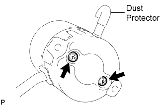
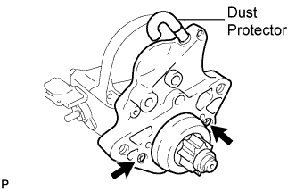

STARTER (for 2.0 kW Type) > REASSEMBLY |
| 1. INSTALL STARTER ARMATURE ASSEMBLY |
Install the starter armature to the starter yoke.
| 2. INSTALL STARTER BRUSH HOLDER ASSEMBLY |
Install a new O-ring to the groove of the starter yoke.
 |
Place the brush holder on the starter yoke.
Using a screwdriver, hold the brush spring back.
Connect the brush to the brush holder.
Connect the 4 brushes.
 |
Install 2 new O-rings and the starter commutator end cover with the 2 screws.
Install the dust protector as shown in the illustration.
| 3. INSTALL STARTER CLUTCH SUB-ASSEMBLY |
 |
Apply grease to the steel ball, return spring, clutch roller, retainer and idler gear.
Install the steel ball.
Install a new O-ring to the starter housing.
Insert the return spring into the magnet starter switch hole.
Install the starter clutch, idler gear, retainer and clutch roller.
 |
Install the starter housing to the magnet starter switch with the 2 screws.
Install the dust protector as shown in the illustration.
| 4. INSTALL STARTER YOKE ASSEMBLY |
 |
Install a new O-ring to the groove of the starter yoke.
Align the protrusion of the starter yoke with the groove of the magnet starter switch.
 |
Install the starter yoke with the 2 through bolts.
Connect the lead wire to the magnet starter switch terminal with the nut.